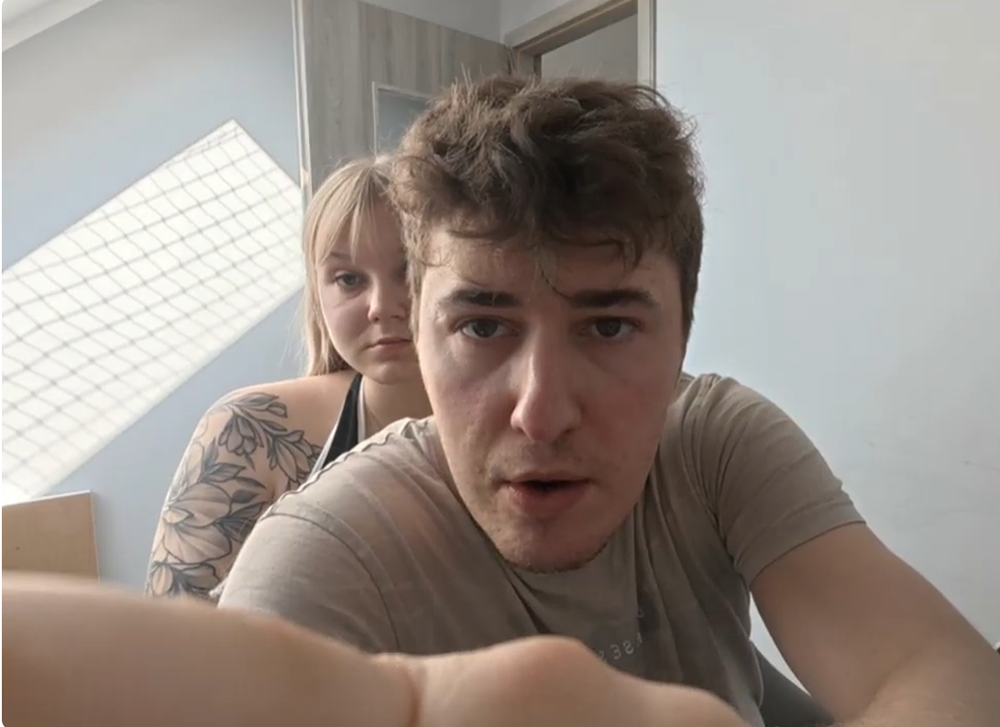
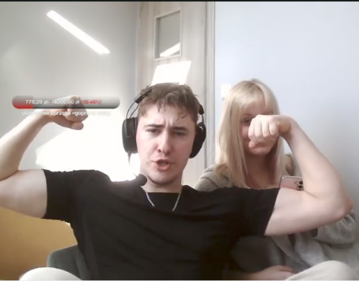
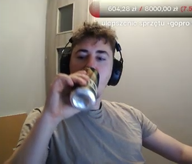
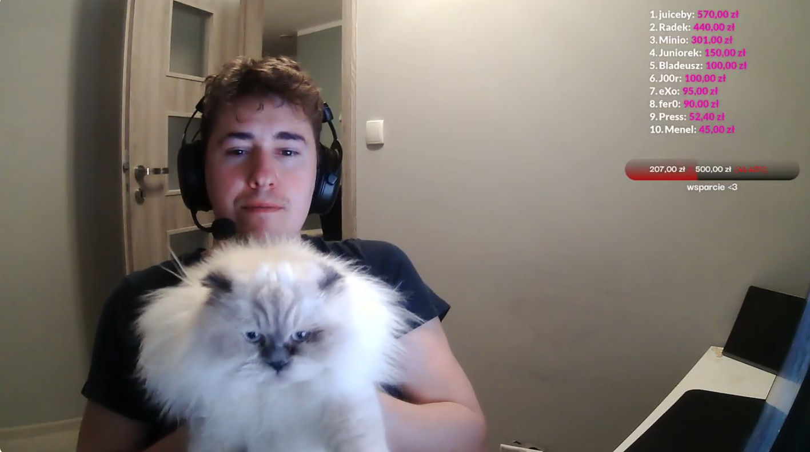
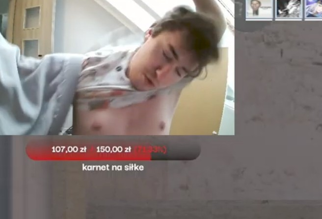
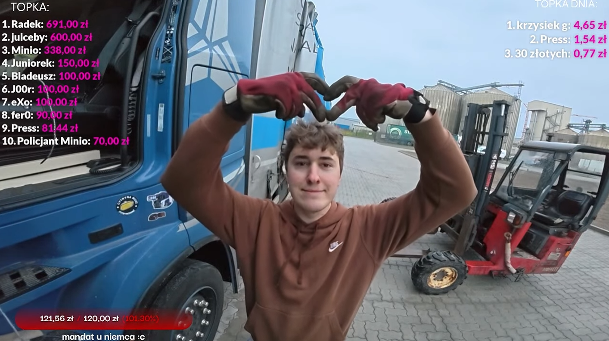
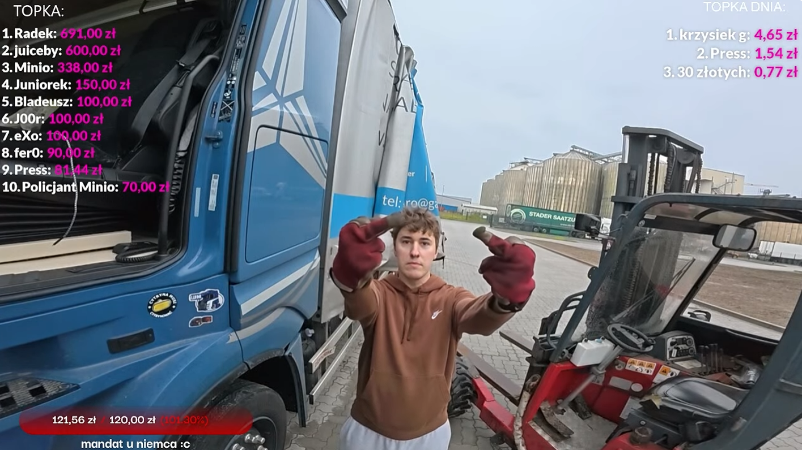
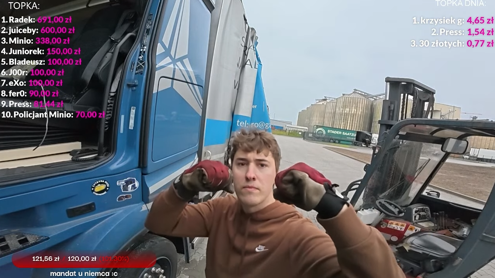
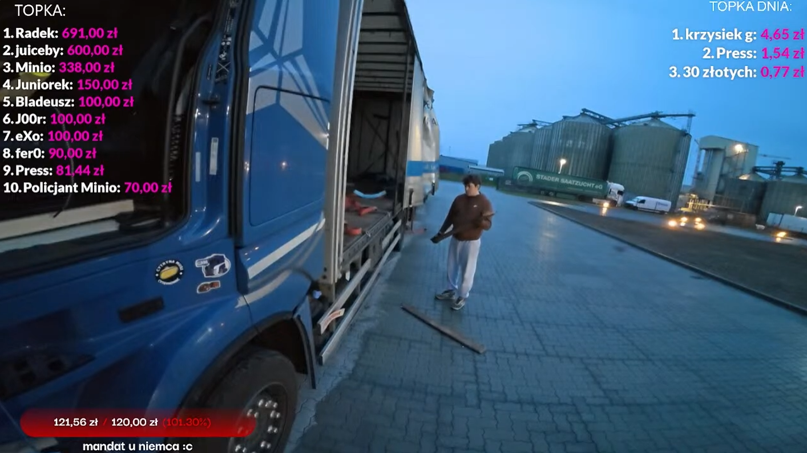

Witaj w moim świecie
Jestem JustAndrew. Zobacz moje fotografie poniżej.
Brak ulubionych zdjęć
Nie dodałeś jeszcze żadnych zdjęć do ulubionych. Kliknij ikonę serduszka przy dowolnym zdjęciu, aby dodać je do swojej listy!
Moment zdziwienia
Emocje

Duet
Ludzie

Flexing
Trening

Akrobata
Energia
Refreshment
Relaks
Głębokie skupienie
Emocje

Odświeżenie
Relaks
Przerwa na sprzęt
Praca
Serce
Społeczność
Przyjaciele
Ludzie

Z puszystym przyjacielem
Zwierzęta
Zbliżenie i zabawa
Zabawa
Pozdrowienia
Stream
Skupienie
Praca

Trening
Trening

Serce z pracy
Emocje

Niezadowolenie
Emocje

Siła i motywacja
Trening
Skupienie przed kamerą
Stream
Spojrzenie z góry
Stream
Gest sympatii
Stream
Transmisja na żywo w kabinie
Stream
Relaks ze szklanką
Stream

Stream 25
Stream
Chwila wytchnienia
Relaks
Transmisja i Orzeźwienie
Stream
Chcesz dodać swoje zdjęcie?
Wyślij nam swoje fotografie poprzez specjalny formularz, a po weryfikacji mogą pojawić się w galerii!
Prześlij zdjęcie